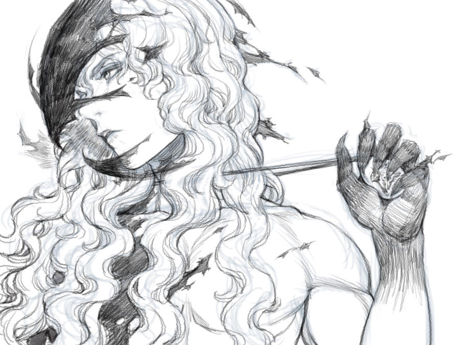
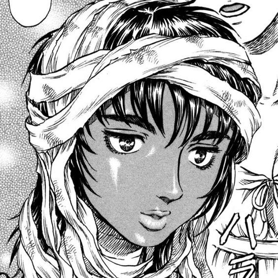

Berserk sigue la historia de Guts, un guerrero solitario con un pasado oscuro y una misión de venganza. A lo largo de su viaje, se encuentra con varios aliados y enemigos en un mundo lleno de demonios y magia.

| Nombre | Foto | Descripción |
|---|---|---|
| Guts | |
Protagonista de la serie, un guerrero formidable con un pasado oscuro. |
| Griffith |  | El carismático líder de la Banda del Halcón y antiguo amigo de Guts. |
| Casca |  | Una guerrera valiente y miembro de la Banda del Halcón, con sentimientos profundos hacia Guts. |